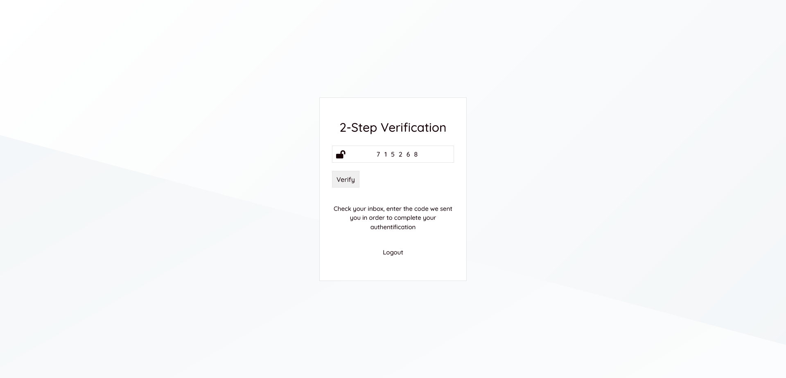

SurveyClick / Documentation
Installation is simple and it doesn't take longer than 5 minutes. Upload the script in the directory you want to install SurveyClick. Then visit the link, and you'll see that a form will pop up. From now on, you'll follow the steps and that's it!
Step 1: Requirements check
In Step 1 you don't need to do anything. Here you'll be informed about the state of your installed software and extensions. In SurveyClick are only used official PHP extensions: mysqli, json, zip, mbstring, intl, gettext, gd. PHP version accepted: 7.3. MySQL server version 8.0.
Step 2: Database connection details
Database, user and password, host. The tables prefix is optional. If you write "myprofix_", the users table for example will become "myprefix_users" instead of just "users". The tables prefix is useful only if you want to use multiple installations in the same database.
Step 3: Server options & default settings
Note*: The following options will be saved as constants in the settings.php file.
* Timezone will be used as a fallback if the visitor's country cannot be detected automatically.
* Payments will be made in this currency. Accounts balances will be displayed in this currency.
* Default language will be used as a fallback if the visitor's country cannot be detected automatically.
Step 4: Owner's account
Owner's account credentials. You'll be able to sign in with these details right after installation and you can start managing your new website
Common MySQL errors
- No such file or directory - try to replace hostname localhost with 127.0.0.1
Right after installation, your website is ready so you can sign in.
Settings -> General
Website name, description & URL. Minimum witdraw amount for respondents. Minimum deposit amount for surveyors.
* The default country is used only if the visitor's country cannot be detected automatically.
* The default language is used only if the visitor's country cannot be detected automatically. If it can be detected then the default language for the visitor's country will be used. See Settings -> Countries
Settings -> 3rd Party & Mail settings
Paypal credentials for automatically payments & Mail settings.
After installation, you can personalize the email templates and set up the sender's name for every template.
* You can select to use PHP mail() function or set up a SMTP server
Settings -> Payment plans
Payment plans are used for subscriptions. You can edit a plan, delete or create an offer.
Settings -> Ivoicing
Options for Tax %, prefixes to invoices and receipts for internal use (if needed).
Example of "Tax label": VAT
* Automatically generated invoices will be numbered consecutively
* Invoices for the survey's budget will be issued when the survey is finished or its status has been changed
Settings -> KYC Verification
Know Your Customers is a great tool in this business. Protect surveyors to get the answers from real verified persons
Here you have the options to require a list of documents for each language
Settings -> Terms of use - pages
Select a "terms of use" page for each language
These pages are visible in "Registration" form:
Settings -> Countries
The script will import all countries automatically, here you can only change the default settings for a country. Hour format, date format, timezones, money format.
Settings -> Referral
Here you can setup the reward system for your users (using loyalty points) for referring friends. You can give them points on these actions: when their friend register and verify the account and/or when their friend make a deposit. There is no limit to the levels.
Settings -> SEO
Setup meta title, description, keywords & favicon.
Create the first survey
From your menu, click on "New survey", and a new pop-up will appear. The name of the survey will not be publicly visible, it will be visible only by you and your team, in case there is one. Select the number of responses you need. If you select 20 for example, the 20th complete answer will change the status of the survey from "Live" to "Finished".
If you are a member of a team and you want to create a personal survey, choose "Personal survey", for the other options "Share with your team" or "Share with a few members only" you should know that the survey is assigned to team's owner.
Once the previous form is submitted, the survey will be created and visible in "My Surveys". The surveys is not ready yet, so the status will be "Request setup". We need to set up questions and at least one collector.
Create the first question
Questions can be added in separate steps. A step is a diferent page of questions. If your survey is empty, you can import questions from "Templates". Templates are pre made forms.
"Name" is the name of the question that will appear on the survey form. "Info" will be visible right after the question name and it is used as a description of the question. This field is not mandatory. "Question type" is the type of the question, each type has its own options that will appear once the type is selected.
The default question types:
-
Multiple Choice
-
Checkboxes
-
Text Field
-
Textarea
-
Dropdown
-
Date & Time
-
Image Choice
-
Contact Information
-
Slider
-
Matrix/Multiple Choice
-
Matrix/Rating Scale
-
Matrix/Dropdowns
-
Star Rating
-
Ranking
-
File Upload
-
Email
-
Confirmation Checkbox
-
Net Promoter® Score
-
Section Title
- Advanced. External: Text Field – Read more about this input
Create the first collector
Collectors are a mandatory component because these are the links you use to collect answers
There can be two types of collectors:
- Free (simple URLs that can be used on personal websites, social media profiles, etc)
- Paid (collect responses from the community)
Once added questions and at least one collector, the survey is ready to be visible to the world
Go Live
A survey is not visible until the status is manually set to "Live". The status can be changed at any time. The status will be automatically changed to "Finished" when the last completed response reaches the number of requested responses.
Once clicked on one of your surveys, a new menu and many options will appear. Only some of the options will be presented below.
Dashboard
Reports can be generated and compared in the dashboard.
Once a report is generated, another form will replace the personalized overview so reports can be compared fast, side by side.
Responses
In Responses you have the list of all the responses to the survey. Including responses that are not finished yet.
You can view the responses from a particular report, or you can generate a new responses list based on the multitude of filters that can be applied.
By far the most important tool of a survey is the filters and SurveyClick has it all! Here is a list of all filters that can be applied:
- Answers to questions
- Responses duration
- Responses period of time
- Collectors
- Countries
- Points
- Tracking ID
- Variables
- Labels
Labels
This feature will help you to categorize the responses. A response can be assigned to one or more labels.
Reports
Reports can be generated at any time and can be saved and compared with other reports at any time.
Export & compare reports
Select a report that you want to export, select the option to export the report in "Print" mode. There are three options:
- Export this report - will export the current report
- Export responses from this report - will not export the report but the answers from the current report
- Compare and export multiple reports - will export all selected reports
Reports in print mode will appear, before printing the report or saving it as a PDF, you can also modify all the information including question titles and responses.
Here is the final version of the report exported as a PDF of our one-question survey example. Download here
Manage subscription plans
Subscription plans can be managed from the owner's administration panel, from Settings - Payment plans. If you want to terminate a current payment plan, but you want current subscribers to keep the benefits until expiration, you can delete the plan and keep it in the trash until all subscriptions have expired.
Except for the free plan, all others may accept offers. Periods of time with discounts. Accepts minimum months for a discount to be applied.
You also have a list of all subscriptions and reports.
Vouchers can be managed from the owner's administration panel, from Vouchers - View vouchers.
Vouchers can be applied on deposits or "Free" (without any condition). Vouchers can be used by anyone or a user. "Limit" is the number of times a voucher can be used.
Set-up the payments system
PayPal can be set-up from the owner's administration panel, from Settings - 3rd party - PayPal.
Credentials can be generated at https://developer.paypal.com
Advanced. External: Text Field
All answers to this type of question will send a POST request to a provided URL including the answer to the question and the number of points until the current step. The script will read JSON and it is able to throw custom errors, add points and save variables.
Example of request that is sent to the URL (in PHP: $_POST['value'], $_POST['points'])
Example of answer that is read (the array must be JSON encoded)
The example above will throw the error "This is a custom error", the respondent will see the error and will not be able to pass the next step of the survey.
From the same example, if "error" is not set, 100 points will be automatically added to the survey score and will save 3 variables: Name, License and Purcahse Date.
Variables will be saved along with the survey answers and can be used to filter the responses and generate reports.
"Thank you" & "Disqualification" pages
The "Thank you" page will be visible right after the survey is successfully completed. And, of course, the "Disqualification" page will be visible right after a response is disqualified.
The pages can be found in the "Questions" section immediately after the steps.
Editing pages is simple, each paragraph can be visible or hidden depending on the number of points.
Shortcodes can be used. Also variables. This is an example:
Default time, language, money format & separator
Timezone, date format, time format, and language are the user's preferences and can be changed and overridden by the user.
But for non-logged users, this information should be set automatically depending on their location. The country is detected automatically. And options for each country can be set in the owner's administration panel in Settings - Countries and edit the country.
2-Step verification is a built-in option to increase the security of all accounts. The option can be found in Settings - Security options and can be activated/deactivated at any time. By default the option is deactivated.
If the option is activated, validation is required every single time a user is attempt to log in.

Using a powerful CMS, you can manage all the content on your website easily. Easy creation of pages for all languages. Manage the content using simple blocks, for sure you'll consider it simple and intuitive.
The system works with loyalty points.
With the theme options, you can personalize the theme. Every theme may have different options and these are visible only when the theme is activated. Theme options can be found in Themes - Theme options
Delete website's old or unused data
Some information will never be deleted until you choose to. Old information such as old chat messages can be deleted with a single click. This option is located in the main menu in Clear data
Variables are information that can be saved from advanced question types. Such as Advanced. External: Text field
For example, you are a software developer and you request in one of the advanced fields the license key. The answer containing the license key will be sent to your app in order to validate it. If it is right, you can save variables such as "purchased product name" (PRODUCT_NAME).
You can validate the answer and save some variables. You can throw an error. But you also are able to not throw an error and let the respondent continue the survey without saving any variables.
Saved variables can be used to personalize "Thank you" and "Disqualification" pages in this format: {{?PRODUCT_NAME}}, {{-PRODUCT_NAME}}, {{+PRODUCT_NAME}}
{{?PRODUCT_NAME}} will display the variable value and an empty value in case it is not set
{{-PRODUCT_NAME}} will hide the whole block if the variable is not set
{{+PRODUCT_NAME}} will hide the whole block if the variable is set
* Variables will be visible as responses and can be used in filters and reports.
You can pass answers from a step to another using shortcodes. For example: [199] will return the result of the question with ID 199.
Shortcodes can be used in question's title, question's info and "Thank you" and "Disqualification" pages.
Example. Step 1:
Step 2:
Other shortcodes: [points] stands for the total number of points
trackingId is a GET parameter that can be passed to a collector URL to save more information about the respondent. Like any other parameter, trackingId can be changed in browser.
Example: https://example.org/r/GWXM28?trackingId=test
We know that for some purposes (like saving an order ID) you need trackingId that cannot be changed or removed. When edit a collector in "Encryption" is a private key that can be used among the trackingId parameter to create a public key. The private key should be used in your app, and not shared with anyone.
A public key is a MD5 hash that contains encryption key and trackingId. One after another without space.
Example in PHP: md5( 'a0cafa5ee25052bb7a29af248d3f3cd5test' )
The function will return the public key: 0c2b3f7a58da01d503c2c8ccc7e0e5e5
So we have now the final URL for this collector: https://example.org/r/GWXM28?trackingId=test&key=0c2b3f7a58da01d503c2c8ccc7e0e5e5 and this will be the message if any of the parameters are changed:
* The trackingId value will be saved and can be used in filters and reports.
Commissions are paid by surveyors that chose to collect responses from community respondents. Respondents will see the price with the commission deducted. (the final commission they will get for their response)
The commission can be set from owner's administration panel, from Settings - Prices (Commission for responses)
The commission collected is can be visible in reports and transactions as "website commission"
* Users are allowed to change their country once every 30 days (by default).
* Credits added to the balance from vouchers are saved as 'bonus credit'. Bonus credit cannot be withdrawn. The commissions are paid from credit first, bonus after.